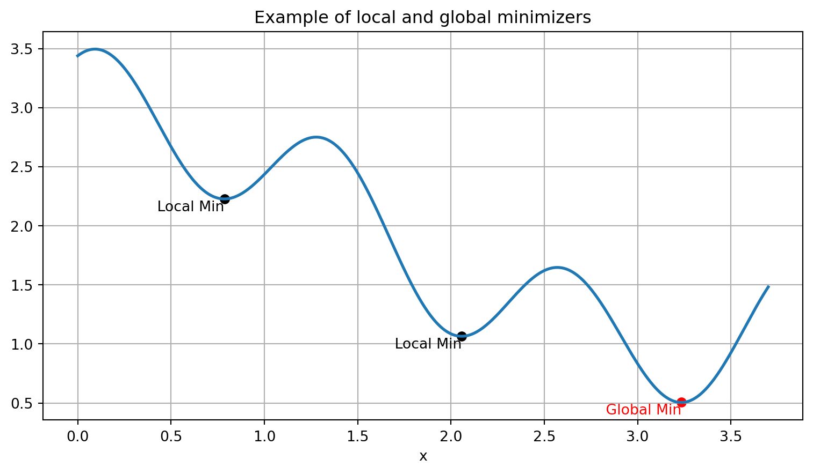
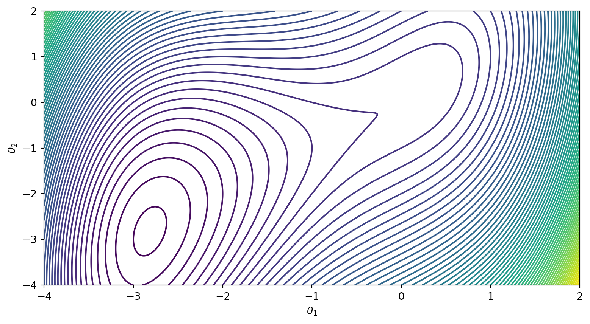
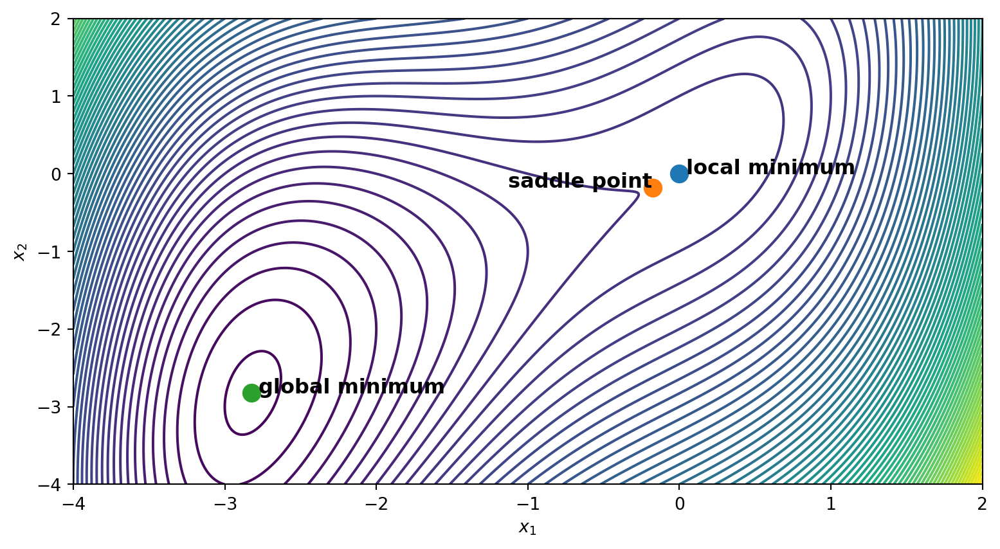

7 Unconstrained Gradient Based Optimization (UGBO)
The intended learning outcomes of these notes are that students should be able to:
Define local and global minimizers of a function.
Describe the first-order necessary condition for a minimizer and apply this knowledge to find critical points of a function.
Describe the second-order sufficient conditions for a minimizer and apply this knowledge to find minimizers of a function.
7.1 Problem formulation
In this lecture, we will be focusing on the following optimization problem,
\[\min_\theta f(\theta)\]
where \(f: \mathbb{R}^n \to \mathbb{R}\) is our objective function (or loss function), and \(\theta\in\mathbb{R}^n\) is a vector of parameters (variables) which we can change. Minimization problems arise in numerous physical and real-world circumstances, including:
- adjusting parameters to optimize performance in engeneering design
- finding the minimum state of energy in a system
- minimizing a loss function when training a neural network
For this lecture, our approach for solving the above minimization problem will be a gradient-based one. This means that we will make use of information from the gradient of \(f\) (first-order information), and the curvature of \(f\) (second-order information).
7.2 Definitions: minimizers
To start, we first need to motivate some fundamental definitions regarding the nature of the solution we are looking for.
Definition: We say that a point \(\theta^\star\) is a global minimizer of \(f\) if: \[f(\theta^\star)\leq f(\theta) \text{ for all }\theta\in \mathcal{D}\subseteq\mathbb{R}^n.\]
Although a global minimizer is the most desireable outcome from our minimization problem, finding a global minimizer is often quite challenging. This is because a global minimizer may not always exist, and because we often only possess local information about the function \(f\). This motivates the following defintion:
Definition: We say that a point \(\theta^\star\) is a local minimizer of \(f\) if there exists some open set \(\mathcal{B}\), that contains \(\theta^\star\), such that: \[ f(\theta^\star)\leq f(\theta) \text{ for all }\theta\in\mathcal{B}. \] If the inequality becomes strict, then \(\theta^\star\) is referred to as a strict local minimizer. To illustrate the above definitions, let us look at the function \(f(\theta) = 2 + \cos(\theta) + \frac{1}{2} \cos\left(5\theta - \frac{1}{2}\right)\) over the domain \(\mathcal{D} = [0, 3.7]\). In this domain, the function has two local minimizers and one global minimizer, as illustrated in the plot below.
We now have a way to understand and characterize our solutions. However, the above definitions suggest that we need to examine all points that are next to \(\theta^\star\) in order to properly characterize it. However, if our function is smooth, i.e., its higher order derivatives exist and are continuous, then we can classify \(\theta^\star\) by examining the derivatives of \(f\).
7.3 First-order necessary conditions
Recall that the gradient of a function \(f(\theta)\), denoted \(\nabla f(\theta)\), is the column vector of partial derivaties with respect to each parameter: \[ \nabla f(\theta) = \begin{bmatrix} \frac{\partial f}{\partial \theta_1}\\ \vdots\\ \frac{\partial f}{\partial \theta_i}\\ \vdots\\ \frac{\partial f}{\partial \theta_n} \end{bmatrix} \] Each element of \(\nabla f(\theta)\) captures the rate of change of the function \(f\) with respect to the parameter \(\theta_i\). The gradient of a function helps us identify local minimizers and allows us to state (without proof) the first fundamental result of gradient-based optimization.
Theorem (first-order necessary conditions): If \(\theta^\star\) is a local minimizer and \(f\) is continuously differentiable in an open nieghborhood of \(\theta^\star\), then \(\nabla f(\theta^\star) = 0\).
A point \(\theta^\star\) is called a stationary point if \(\nabla f(\theta^\star) = 0\). The above theorem guarantees that all local minimizers must be stationary points. However, the theorem cannot guarantee that all stationary points are local minimizers. This is because the conditions are necessary but not sufficient. As a counterexample, a stationary point may be a local maximizer instead of a local minimizer. In order to obtain necessary and suffient conditions, we need to move one derivative higher.
7.4 Second-order sufficient conditions
The curvature of a function \(f\) is the rate of change of the gradient, and tells us whether the slope is stationary, increasing, or decreasing. To compute the curvature of \(f\), we need to take a partial derivate of every component of the gradient with respect to each coordinate direction. This leads to an \((n\times n)\) matrix of second partial derivatives called the Hessian:
\[ H(\theta) = \begin{bmatrix} \frac{\partial^2 f}{\partial \theta_1^2} & \frac{\partial^2 f}{\partial \theta_1 \partial \theta_2} & \cdots & \frac{\partial^2 f}{\partial \theta_1 \partial \theta_n} \\ \frac{\partial^2 f}{\partial \theta_2 \partial \theta_1} & \frac{\partial^2 f}{\partial \theta_2^2} & \cdots & \frac{\partial^2 f}{\partial \theta_2 \partial \theta_n} \\ \vdots & \vdots & \ddots & \vdots \\ \frac{\partial^2 f}{\partial \theta_n \partial \theta_1} & \frac{\partial^2 f}{\partial \theta_n \partial \theta_2} & \cdots & \frac{\partial^2 f}{\partial \theta_n^2} \end{bmatrix} \]
If our function \(f\) has continuous second partial derivatives, then the order of differentiation does not matter and the matrix \(H\) becomes symmetric. The Hessian allows us to establish two more (stronger) fundamental results of gradient-based optimization. Before stating them, let us recall that a matrix \(A\) is positive definite if \(\theta^\top A \theta > 0\) for all \(\theta\neq 0\) and positive semidefinite if \(\theta^\top A \theta \geq 0\) for all \(\theta\).
Theorem (second-order necessary conditions): If \(\theta^\star\) is a local minimizer of \(f\) and the Hessian \(H\) exists and is continuous in an open neighborhood of \(\theta^\star\), then \(\nabla f(\theta^\star) = 0\) and \(H\) is positive semidefinite.
Theorem (second-order sufficient conditions): Suppose that \(H\) is is continuous in an open neighborhood of \(\theta^\star\) and that \(\nabla f(\theta^\star) =0\) and \(H\) is positive definite. Then, \(\theta^\star\) is a strict local minimizer of \(f\).
It is important to remark that the second-order sufficient condition gurantee a stronger result when compared to the second-order necessary condtions. Namely, the second-order sufficient conditions lead to a strict local minimizer. Furthermore, we should also note that the sufficient condtions are not necessary; it is possible for a point \(\theta^\star\) to be a strict local minimizer but fail to satisfy the sufficient conditions. As an example, consider \(f(\theta) = \theta^6\), where \(\theta^\star = 0\) is a strict local minimizer, yet the Hessian evaluates to zero at \(\theta^\star = 0\) and is therefore not positive definite.
7.5 A complete example
Here, we work our way through an example problem where we can see how the concepts from above can be applied to help us identify and characterize critical points. Consider the function:
\[ f(\theta_1, \theta_2) = 0.5\theta_1^4 + 2\theta_1^3 + 1.5\theta_1^2 + \theta_2^2 - 2\theta_1\theta_2 \]
Let’s plot the contours of \(f\).
import numpy as np
import matplotlib.pyplot as plt
# Define the function
def f(theta1, theta2):
return 0.5 * theta1**4 + 2 * theta1**3 + (3/2) * theta1**2 + theta2**2 - 2 * theta1 * theta2
# Create the contour plot
theta = np.linspace(-4, 2, 1000)
y = np.linspace(-4, 2, 1000)
Theta, Y = np.meshgrid(theta, y)
Z = f(Theta, Y)
plt.figure(figsize=(9.5, 5))
contour = plt.contour(Theta, Y, Z, levels=75)
plt.xlabel(r'$\theta_1$')
plt.ylabel(r'$\theta_2$')Text(0, 0.5, '$\\theta_2$')
To start, we need to identify all critical points of \(f\). We can do that by solving for all points such that \(\nabla f(\theta) = 0\), i.e.,
\[ \nabla f(\theta_1, \theta_2) = \begin{bmatrix} \frac{\partial f}{\partial \theta_1} \\ \frac{\partial f}{\partial \theta_2} \end{bmatrix} = \begin{bmatrix} 2\theta_1^3 + 6\theta_1^2 + 3\theta_1 - 2\theta_2 \\ 2\theta_2 - 2\theta_1 \end{bmatrix} = \begin{bmatrix} 0 \\ 0 \end{bmatrix} \]
We can do that by using fsolve() from scipy.optimize.
from scipy.optimize import fsolve
# Define the first partial derivatives
def df_dtheta1(theta1, theta2):
return 2 * theta1**3 + 6 * theta1**2 + 3 * theta1 - 2 * theta2
def df_dtheta2(theta1, theta2):
return 2 * theta2 - 2 * theta1
# Define the system of equations
def equations(vars):
theta1, theta2 = vars
return [df_dtheta1(theta1, theta2), df_dtheta2(theta1, theta2)]
# Solve for critical points
initial_guesses = [(0, 0), (-1, -1), (-10, -10)]
critical_points = [fsolve(equations, guess) for guess in initial_guesses]
print(critical_points)[array([0., 0.]), array([-0.17712434, -0.17712434]), array([-2.82287566, -2.82287566])]Now, we need to classify each critical point. To do so, let’s compute the Hessian:
\[ H(\theta_1, \theta_2) = \begin{bmatrix} \frac{\partial^2 f}{\partial \theta_1^2} & \frac{\partial^2 f}{\partial \theta_1 \partial \theta_2} \\ \frac{\partial^2 f}{\partial \theta_2 \partial \theta_1} & \frac{\partial^2 f}{\partial \theta_2^2} \end{bmatrix} = \begin{bmatrix} 6x_1^2 + 12x_1 + 3 & -2 \\ -2 & 2 \end{bmatrix} \]
We now need to evaluate the Hessian at each one of the critical points and check whether is it positive semidefinite. There are a number of ways we can check this, but we will be examining the eigenvalues of the Hessian and checking whether they are all positive.
# Define the Hessian
def Hessian(theta1, theta2):
return np.array([[6 * theta1**2 + 12 * theta1 + 3, -2], [-2, 2]])
eigs = [np.linalg.eigvals(Hessian(pt[0], pt[1])) for pt in critical_points]
print(eigs)[array([4.56155281, 0.43844719]), array([-0.5227962 , 3.58554227]), array([17.20040482, 1.73684911])]Based on these results, we know that the first and third critical points are local minimizers. The second critical point is classifies as a saddle point because the Hessian is not positive semidefinite. To find out which of the local minimizers is the global minimzer, we evaluate the function at each of these points. Let’s go ahead and label the points accordingly.
# Create the contour plot
theta = np.linspace(-4, 2, 1000)
y = np.linspace(-4, 2, 1000)
Theta, Y = np.meshgrid(theta, y)
Z = f(Theta, Y)
plt.figure(figsize=(9.5, 5))
contour = plt.contour(Theta, Y, Z, levels=75)
plt.xlabel(r'$\theta_1$')
plt.ylabel(r'$\theta_2$')
# Plot and label the critical points
labels = ["local minimum", "saddle point", "global minimum"]
for (theta, y), label in zip(critical_points, labels):
plt.scatter(theta, y, label=f'{label} ({theta:.2f}, {y:.2f})', s=100)
if label == "saddle point":
plt.text(theta, y, f' {label}', fontsize=12, ha='right', weight='bold')
else:
plt.text(theta, y, f' {label}', fontsize=12, ha='left', weight='bold')
plt.grid(False)
plt.show()